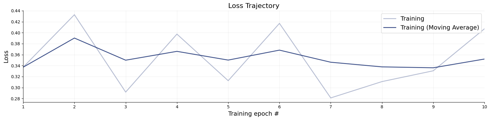
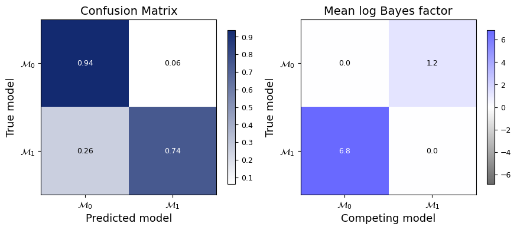
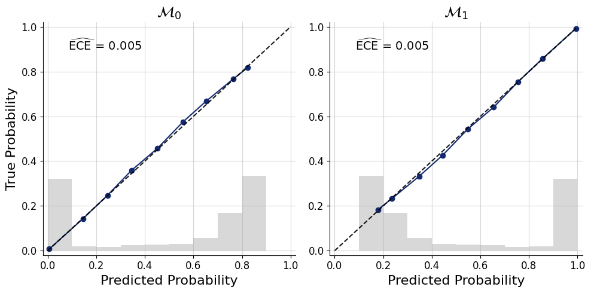

5. Simple Model Comparison - One Sample T-Test#
Author: Šimon Kucharský, Jerry M. Huang
In this notebook, we will show how to do a simple model comparison in BayesFlow amortized over the number of observations.
Amortized Bayesian model comparison leverages neural networks to learn a mapping from data to posterior model probabilities, effectively bypassing the need for costly inference procedures for each new dataset.
The method is particularly useful in scenarios where model evaluation needs to be performed repeatedly, as the inference cost is front-loaded into the training phase, enabling rapid comparisons at test time.
We will drive the whole process with BayesFlow’s ModelComparisonWorkflow, which bundles the data adapter, the summary and classifier networks, the optimizer, and the diagnostics behind a single, compact interface.
import numpy as np
import bayesflow as bf
import keras
INFO:bayesflow:Multiple Keras-compatible backends detected (JAX, PyTorch, TensorFlow). Defaulting to JAX.
To override, set the KERAS_BACKEND environment variable before importing bayesflow.
See: https://keras.io/getting_started/#configuring-your-backend
INFO:jax._src.xla_bridge:Unable to initialize backend 'tpu': UNIMPLEMENTED: LoadPjrtPlugin is not implemented on windows yet.
INFO:bayesflow:Using backend 'jax'
5.1. Simulator#
First we define our trivial simulators, one for every model that we want to compare. In this notebook, we will use two simple models
Each model has its own prior, but the likelihood (which is responsible for simulating the data \(x\)) remains the same for both models.
Once we define the two simulators, we wrap them in one overarching simulator that simulates from both models at the same time, so the networks can be trained on data from either model.
def prior_null():
return dict(mu=0.0)
def prior_alternative():
mu = np.random.normal(loc=0, scale=1)
return dict(mu=mu)
def likelihood(mu, n=30):
x = np.random.normal(loc=mu, scale=1, size=n)
return dict(x=x)
simulator_null = bf.make_simulator([prior_null, likelihood])
simulator_alternative = bf.make_simulator([prior_alternative, likelihood])
simulator = bf.simulators.ModelComparisonSimulator(
simulators=[simulator_null, simulator_alternative],
use_mixed_batches=True
)
Now we can simulate some data to see what the simulator produces.
data = simulator.sample(100)
for key, value in data.items():
print(key + " shape:", np.array(value).shape)
mu shape: (100, 1)
x shape: (100, 30)
model_indices shape: (100, 2)
Notice that the simulator automatically adds model_indices, which indicates which model generated each dataset (it is one-hot encoded, and therefore has as many columns as there are models).
5.2. Building the workflow#
ModelComparisonWorkflow ties the whole pipeline together: the simulator, an adapter that shapes the raw simulations for the networks, a summary network that compresses each dataset into a fixed-length embedding, and a classifier that turns that embedding into posterior model probabilities (PMPs). It also configures the optimizer and the training loss for us.
We only need to supply two things ourselves: the adapter and the summary network. Let’s start with the adapter.
adapter = (
bf.Adapter()
.convert_dtype("float64", "float32")
.as_set("x")
.rename("x", "summary_variables")
.rename("model_indices", "inference_variables")
)
The adapter prepares each simulated batch for the networks. In short, it:
treats the observations
xas an unordered set (.as_set), so that inference is invariant to the ordering of the data points, and routes them to the summary network assummary_variables;exposes the one-hot
model_indicesas theinference_variablesthat the classifier learns to predict.
The three target names — summary_variables, inference_conditions, and inference_variables — are exactly the keys ModelComparisonWorkflow expects. We can apply the adapter to a batch to check the resulting shapes:
processed_data = adapter(data)
for key, value in processed_data.items():
print(key + " shape:", value.shape)
mu shape: (100, 1)
summary_variables shape: (100, 30, 1)
inference_variables shape: (100, 2)
With the adapter in place, we can assemble the workflow. As a summary network we use a DeepSet, the natural architecture for exchangeable (set-valued) observations. By default, the workflow uses the cross-entropy score to learn the correct model probabilities. Passing model_names simply gives the diagnostics readable labels.
workflow = bf.ModelComparisonWorkflow(
simulator=simulator,
adapter=adapter,
summary_network=bf.networks.DeepSet(summary_dim=8, depth=1),
model_names=[r"$\mathcal{M}_0$", r"$\mathcal{M}_1$"],
)
5.3. Training#
Training uses the online fitting interface: the workflow draws fresh simulations on the fly, so there is no fixed training set to manage. We train for a handful of epochs — this problem is easy enough that the classifier converges quickly.
history = workflow.fit_online(
epochs=10,
num_batches_per_epoch=200,
batch_size=128,
)
5.4. Validation#
Once trained, we check whether the classifier behaves as expected. Because the comparison is amortized over the sample size, we can validate it at a specific n without retraining. Here we fix \(n = 10\) and simulate a fresh batch of test datasets.
test_data = simulator.sample(5000)
print(f"{test_data['x'].shape=}")
test_data['x'].shape=(5000, 30)
The workflow’s plot_default_diagnostics detects that we trained with a PMP scoring rule and produces the appropriate plots: the loss trajectory, a confusion matrix (how often the most probable model is the true one), and calibration curves (whether the predicted probabilities are trustworthy — an 80% prediction should be correct about 80% of the time).
figures = workflow.plot_default_diagnostics(test_data=test_data)
INFO:bayesflow:Estimating completed in 2.34 seconds.
INFO:matplotlib.mathtext:Substituting symbol M from STIXNonUnicode
INFO:matplotlib.mathtext:Substituting symbol M from STIXNonUnicode
INFO:matplotlib.mathtext:Substituting symbol M from STIXNonUnicode
INFO:matplotlib.mathtext:Substituting symbol M from STIXNonUnicode

INFO:matplotlib.mathtext:Substituting symbol M from STIXNonUnicode
INFO:matplotlib.mathtext:Substituting symbol M from STIXNonUnicode

INFO:matplotlib.mathtext:Substituting symbol M from STIXNonUnicode
INFO:matplotlib.mathtext:Substituting symbol M from STIXNonUnicode

We can also compute the corresponding scalar metrics — overall accuracy and the per-model expected calibration error (ECE):
metrics = workflow.compute_default_diagnostics(test_data=test_data)
metrics
INFO:bayesflow:Estimating completed in 0.31 seconds.
| $\mathcal{M}_0$ | $\mathcal{M}_1$ | |
|---|---|---|
| Accuracy | 0.937066 | 0.741089 |
| Expected Calibration Error | 0.004666 | 0.004666 |
| Brier Score | 0.120126 | 0.120126 |
To obtain the posterior model probabilities themselves, we call estimate. The model_probs array holds one row of PMPs per dataset; here the two columns are \(P(\mathcal{M}_0 \mid x)\) and \(P(\mathcal{M}_1 \mid x)\).
estimates = workflow.estimate(conditions=test_data)
estimates["model_probs"][:5]
INFO:bayesflow:Estimating completed in 0.30 seconds.
array([[0.8126562 , 0.18734378],
[0.8128945 , 0.1871055 ],
[0.82319444, 0.17680562],
[0.79060215, 0.20939793],
[0.78243977, 0.2175602 ]], dtype=float32)
5.5. Saving and Loading#
The trained networks live inside workflow.approximator, which we can serialize with the standard Keras machinery.
from pathlib import Path
# Full serialization (the checkpoints folder must exist)
filepath = Path("checkpoints") / "ttest_classifier.keras"
filepath.parent.mkdir(exist_ok=True)
workflow.approximator.save(filepath=filepath)
BayesFlow must be imported before calling keras.saving.load_model so that its custom objects are registered with Keras (already done above). The loaded object is a ready-to-use approximator on which all the usual methods continue to work:
approximator = keras.saving.load_model(filepath)
estimates = approximator.estimate(conditions=test_data)
estimates["model_probs"][:5]
array([[0.8126562 , 0.18734378],
[0.8128945 , 0.1871055 ],
[0.82319444, 0.17680562],
[0.79060215, 0.20939793],
[0.78243977, 0.2175602 ]], dtype=float32)
Congratulations! You have now learned how to use BayesFlow’s ModelComparisonWorkflow and can use it for comparing your own models.